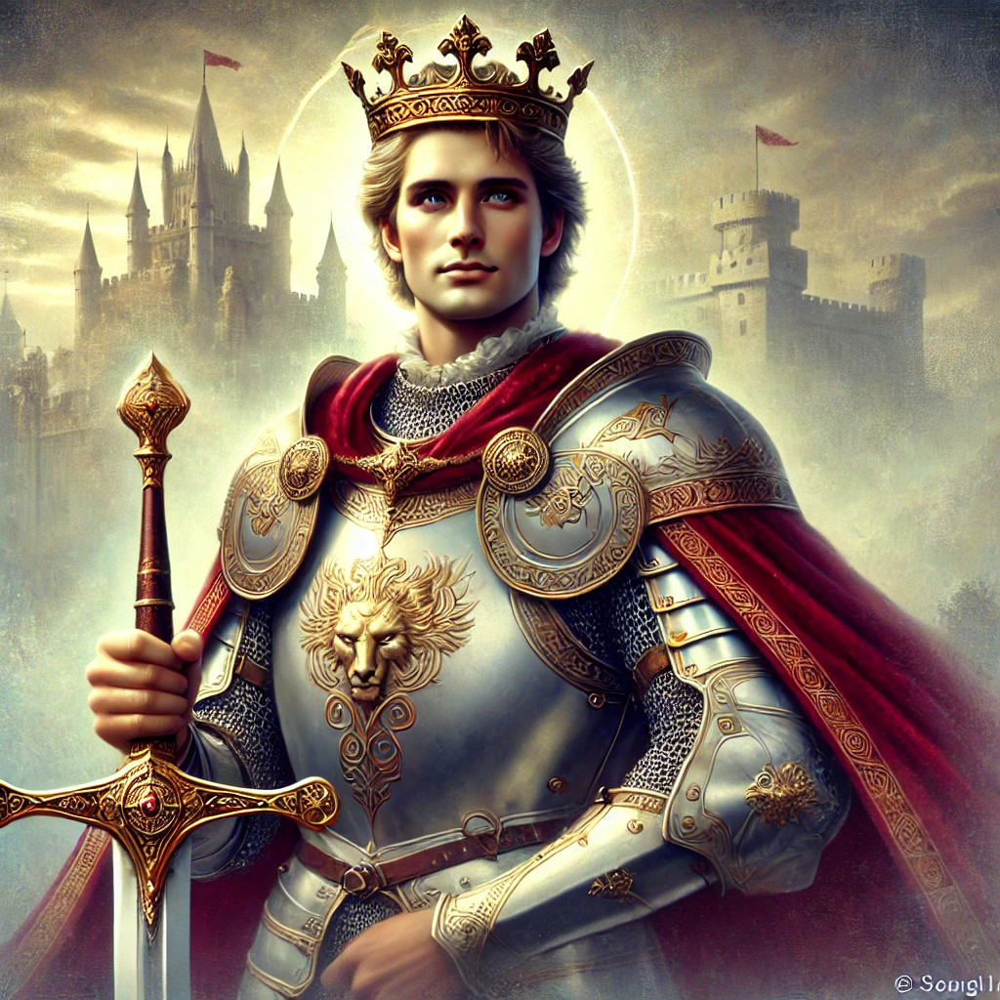

The Once And Future King
King Arthur, the legendary ruler of Camelot, is a timeless symbol of chivalry, bravery, and justice. Revered as “The Once and Future King,” his story transcends generations, blending myth and history into an enduring tale of heroism and hope. Arthur’s journey begins with the miraculous moment he pulls the sword Excalibur from the stone, proving his divine right to rule.
As king, he establishes Camelot, a beacon of fairness and unity, where the Knights of the Round Table pledge to uphold the ideals of honor and courage. Guided by the wisdom of the wizard Merlin, Arthur faces trials, betrayal, and triumph, leaving an indelible mark on the world. His final battle against Mordred at Camlann is both his greatest victory and his ultimate sacrifice. Though mortally wounded, Arthur is carried to Avalon, where legend says he rests, awaiting the day he will return to lead his people once more.
Arthur’s legacy is a testament to the power of leadership, the pursuit of justice, and the enduring belief that greatness lies in service to others. He remains a figure of inspiration, a king who will forever live in the hearts of those who dream of a better world